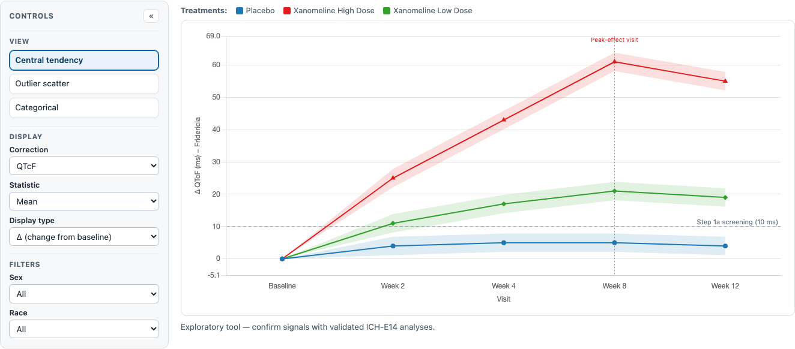
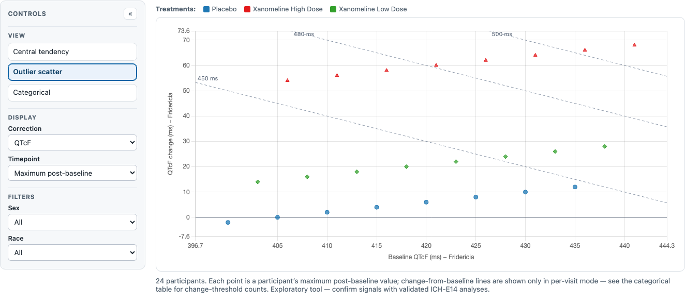
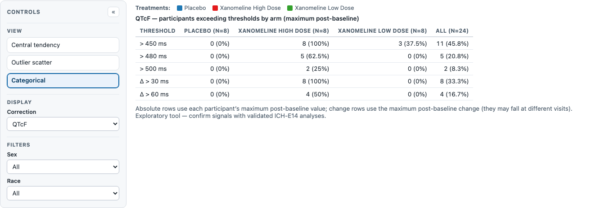

QT Safety Explorer: clinical guide Experimental
How to read the QT Safety Explorer to screen ECG data for drug-induced QT/QTc prolongation, and where each step lives in the controls on this page.
Exploratory review aid, not a validated diagnostic tool. A drug-induced QT-prolongation conclusion requires the validated ICH-E14 analyses; this graphic flags signals for review, it does not confirm them.
What the QT Safety Explorer shows
The QT Safety Explorer is an interactive tool for screening electrocardiogram (ECG) data for drug-induced QT/QTc-interval prolongation — the surrogate marker for the delayed cardiac repolarization that can precipitate the polymorphic ventricular tachycardia Torsade de Pointes (TdP), and, rarely, sudden death. Because the number of drugs withdrawn for this effect is large, the FDA and ICH recommend that every new drug with systemic exposure be screened for a QT signal as part of its premarket risk assessment (ICH E14; FDA 2005).
The QT interval varies inversely with heart rate, so the measured QT is routinely corrected for heart rate to a QTc that is, ideally, rate-independent. This tool works with the two fixed correction formulas present in the demo data — QTcF (Fridericia) and QTcB (Bazett) — plus heart rate itself; the individualized correction (QTcI) is a planned addition. In the ICH-E14 workflow the neutral term QTcX denotes whichever correction is in use.
The tool presents two complementary families of display, switched with the View control:
- Central tendency — the mean or median QTc change across the whole study population over time, one line per treatment arm. This is where an average drug effect first shows up.
- Outlier and categorical analysis — the individual participants whose QTc falls outside the general range: the outlier scatter of change-from-baseline against baseline QTc, and the categorical table counting how many participants in each arm cross the accepted thresholds.
This tool is exploratory. It is not validated and is not intended to provide clinical or regulatory-grade evidence of drug-induced QT prolongation; a formal conclusion requires the validated statistical analyses and standard operating procedures compliant with ICH E14 and its Q&A updates. It also assumes a generally healthy adult population — ECGs from participants with congenital or acquired long-QT syndromes or other significant structural cardiac abnormalities are assumed to be excluded from the dataset.

How the evaluation workflow is organized
The workflow moves from the population average to the individual outliers, gathering evidence for or against a drug cause at each stage. Step 1 looks for an average QTc effect within the treated population; Step 2 compares that effect against the placebo (or control) arm; Step 3 counts the individual participants who cross the absolute and change-from-baseline thresholds. Because the QT interval is sensitive to other influences — most importantly heart rate — each step is read alongside the heart-rate change, so that a QTc shift driven by a rate change is not mistaken for a direct repolarization effect.
A prolonged QTc is a marker of risk, not of harm: it flags cases and drugs for closer evaluation, it does not diagnose TdP. Each step below pairs the source workflow's decision with its clinical rationale and points to where it lives in the controls on this page.
Some steps in the source workflow depend on measures this release does not yet carry — the PR and QRS intervals, the JT interval, the individualized QTcI correction, and the QT-RR hysteresis plot. They are kept here for completeness, flagged where they appear, and listed together in the deferred-features note near the end.
Central tendency evaluation
Step 1a — Is there an average QTc prolongation within the treated arm?
Examine the central-tendency display with the Display type set to Δ (change from baseline). If the mean or median QTcX equals or exceeds 10 ms at any timepoint, that may indicate drug-induced QTc prolongation among the study participants. The dashed 10 ms reference line marks this threshold of regulatory concern (ICH E14). Switch the Statistic control between mean and median to check that the signal is not driven by a few extreme values, and read the shaded 90% confidence band to judge how firmly the estimate sits relative to the line. If a signal is present, proceed to Step 1b before attributing it to the drug.
Step 1b — Could a heart-rate change explain it?
During the period a QTc prolongation is observed, ask whether the heart rate increased by ≥ 25% or reached an absolute ≥ 100 bpm. Although QTcF is less sensitive to rate than the uncorrected QT, a large rate change can still contribute to an apparent QTc shift, and fixed correction formulas have not been validated under conditions of changing heart rate — caution is warranted for drugs that move the rate by 5–10 bpm (Panicker et al. 2018). Anecdotally QTcF, unlike QTcB, can either prolong or shorten with an increase in rate depending on the population. Switch the Correction control to Heart Rate and read its change over the same visits.
_The parallel PR-interval and QRS-duration confounder checks in the source workflow (a PR increase ≥ 25% or ≥ 200 ms, suggesting calcium-channel block; a QRS increase to ≥ 120 ms, suggesting sodium-channel block or bundle-branch block, where the JT interval becomes the better repolarization measure) require the PR/QRS intervals, which are not in this dataset and are a planned addition._
Step 2a — Is the QTc prolongation larger than placebo's?
Comparing the treated arm against the placebo arm removes background sources of QTc variability — food intake, circadian rhythm, and the mere passage of time — that both arms share, isolating the part of the signal attributable to the drug. This double difference is denoted ΔΔ: the arm's mean change minus the placebo arm's mean change at each visit.
Set Display type to ΔΔ (placebo-corrected). The placebo arm drops out (it is the reference, ≡ 0) and each remaining arm is plotted as its placebo-corrected change against the same 10 ms reference. A per-visit mean difference at or above 10 ms may indicate a drug effect. Below the chart, the ICH-E14 metric table reports, for each arm, the largest upper bound of the two-sided 90% confidence interval for the mean difference across the visits, flagged against the 10 ms threshold — the single number the ICH-E14 "concern" assessment turns on.
The confidence interval here is a large-sample normal approximation intended for exploratory screening; it is not the mixed-model (ANCOVA/MMRM) least-squares-means bound a definitive analysis would use, and the flag is a prompt for that analysis, not a substitute for it.
Step 2b — Is the heart-rate change larger than placebo's?
As in Step 1b, but between groups: does the heart rate rise by ≥ 25% relative to placebo, or reach ≥ 100 bpm? Read the Heart Rate correction in ΔΔ mode. _(The between-group PR and QRS comparisons, again, await those intervals.)_
Outlier and categorical evaluation
Central tendency describes the population as a whole; a drug can be safe on average yet prolong QTc dangerously in a susceptible minority. Steps 3a–3b look at the individual participants whose values fall outside the general range.

Step 3a — Which participants cross the absolute QTc thresholds?
Individual participants with QTc values above 450 ms show evidence of a propensity to QT prolongation; 480 ms and 500 ms mark successively greater concern, with > 500 ms during therapy a threshold of particular concern in clinical trials. There is no consensus upper limit — lower limits raise the false-positive rate, higher limits risk missing a signal — so the tool shows all three.
In the Outlier scatter view the three absolute thresholds are drawn as diagonal cut-lines: because a point's absolute QTc is its baseline (x) plus its change (y), a fixed absolute threshold _T_ is the line change = T − baseline (slope −1). A point lying above a diagonal has an absolute QTc above that threshold. The Categorical view then tabulates, for each arm, the count and percent of participants whose maximum post-baseline QTc exceeds 450, 480, and 500 ms — the proportion of the population showing evidence of prolongation, which is what quantifies the concern.

Step 3b — Which participants change most from their own baseline?
Independently of the absolute value, participants whose QTc rises > 30 ms or > 60 ms from baseline show evidence of a propensity to prolongation, with a change > 60 ms during therapy a threshold of particular concern. In the outlier scatter these are the horizontal change lines at 30 and 60 ms (shown when a specific visit is selected, so baseline and change are read from the same reading); the Categorical table counts, by arm, the participants whose maximum post-baseline change exceeds 30 and 60 ms.
Note that the scatter's default "Maximum post-baseline" mode places each participant at their worst _absolute_ value, whose visit need not be the visit of their worst _change_ — so the categorical table, which tracks the maximum change independently, is the authoritative count for the change thresholds.
_Steps 3c and 3d of the source workflow extend this to the PR interval (> 220 ms or a > 25% increase) and the QRS duration (> 120 ms or a > 25% increase), which are not in this dataset and are planned additions._
Choosing a correction: QTcF, QTcB, and QTcI
The Correction control selects the heart-rate correction. QTcF (Fridericia) largely removes the QT interval's dependence on heart rate and has gained preference over QTcB. QTcB (Bazett) is provided because it is present in the demo data, but it overcorrects at high heart rates, producing an artifactually prolonged QTc; it is not the workflow's preferred method and its signals should be read with that caveat. The workflow's second recommended correction is the individualized QTcI, fitted from each participant's own QT-RR relationship over a wide range of heart rates — the most robust choice when a drug changes heart rate, and a planned addition to this tool (it needs per-subject QT-RR slopes the demo data does not carry).
How this maps to the controls on this page
- Within-arm average QTc effect (Step 1a) → the Central tendency view with Display type Δ, the Statistic (mean/median) toggle, the 90% confidence band, and the 10 ms reference line.
- Placebo-corrected effect and the ICH-E14 concern number (Step 2a) → Display type ΔΔ, which drops the placebo arm and adds the ICH-E14 metric table (largest upper 90% CI bound vs 10 ms).
- Peak-effect timing → the peak-effect-visit marker on the central-tendency chart.
- Heart-rate confounding (Steps 1b / 2b) → the Correction control set to Heart Rate, in Δ or ΔΔ mode.
- Absolute QTc outliers (Step 3a) → the outlier scatter's 450/480/500 ms diagonal cut-lines and the Categorical table's absolute rows.
- Change-from-baseline outliers (Step 3b) → the scatter's 30/60 ms change lines (per-visit mode) and the Categorical table's change rows.
- A specific visit versus the worst reading → the Timepoint control (Maximum post-baseline, or a named visit).
- Population and subgroup context → the per-arm colours and mark shapes with the Treatments legend, plus the Sex, Race, and Site filters.
What is not yet on this page
Several steps of the source workflow depend on measures or displays planned for a later release, so no control corresponds to them today:
- The PR and QRS intervals — the multi-channel confounder checks of Steps 1b/2b and the categorical Steps 3c/3d; the JT interval (JT = QT − QRS), the better repolarization measure in the presence of bundle-branch block, depends on QRS.
- The individualized QTcI correction — fitted per-participant QT-RR slopes.
- The QT-RR hysteresis plot — the source workflow's final addition.
- The per-subject drill-down — electrolyte and thyroid context (potassium, magnesium, calcium, TSH) for an individual flagged case.
- A moxifloxacin positive-control arm — the demo's CDISC Pilot study carries none; the demo therefore covers QTc and heart rate only, without PR/QRS or a positive control.
Try it in the demo
Open the live demo and work a few of the steps against real data.
- In the Central tendency view, switch Display type from Δ to ΔΔ and watch the placebo arm drop out and the ICH-E14 metric table appear.
- Toggle the Statistic between mean and median to see whether the average effect is driven by the tails.
- Switch the View to Outlier scatter and read which arms' participants sit above the 450 ms diagonal; then pick a specific visit in the Timepoint control to bring in the 30/60 ms change lines.
- Open the Categorical view and compare the exceedance percentages across arms.
- Switch the Correction to Heart Rate to check whether a rate change accompanies any QTc shift.
Source and attribution
This guide ports the evaluation workflow and clinical rationale of the QT Safety Explorer User's Manual (v0.1), a product of the ASA Biopharmaceutical–DIA Safety Working Group's Interactive Safety Graphics (ISG) subteam, developed in collaboration with the Cardiac Safety Research Consortium (CSRC). The step structure and thresholds follow that manual and the ICH E14 guidance and its Q&A updates. As the manual states, the tool is exploratory and unvalidated; findings must be confirmed with validated analyses compliant with ICH E14 and the user's organization's standard operating procedures.
References
- Bazett HC. An analysis of the time-relations of electrocardiograms. _Heart_ 1920;7:353–370.
- Bogossian H, Linz D, Heijman J, et al. QTc evaluation in patients with bundle branch block. _IJC Heart & Vasculature_ 2020;30:100636.
- Cosansu K, Cakmak HA, Karadag B, et al. Alterations in QTc and PR intervals in renal transplant patients receiving immunosuppressive drugs. _Heart_ 2011;97(Suppl 3):A186.
- Davey P. How to correct the QT interval for the effect of heart rate in clinical studies. _J Pharmacol Toxicol Methods_ 2002;48:3–9.
- Davey PP, Bateman J. Heart rate and catecholamine contribution to QT interval shortening on exercise. _Clin Cardiol_ 1999;22:513–518.
- Food and Drug Administration. Guidance for Industry: Premarketing Risk Assessment. March 2005.
- Fridericia LS. Die Systolendauer im Elektrokardiogramm bei normalen Menschen und bei Herzkranken. _Acta Med Scand_ 1920;53:460–469.
- International Council for Harmonisation. E14: The Clinical Evaluation of QT/QTc Interval Prolongation and Proarrhythmic Potential for Non-Antiarrhythmic Drugs (and Q&A updates).
- Panicker GK, Kadam P, Chakraborty S, et al. Individual-specific QT interval correction for drugs with substantial heart rate effect using Holter ECGs extracted over a wide range of heart rates. _J Clin Pharmacol_ 2018;58:1013–1019.